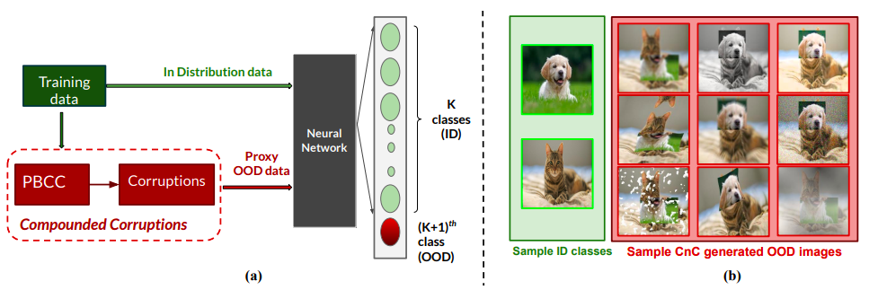
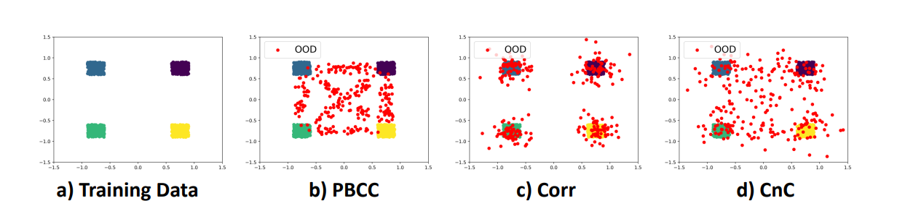

A Novel Data Augmentation Technique for Out-of-Distribution Sample Detection using CompouNded Corruptions
-
Ramya Hebbalaguppe
IIT Delhi & TCS Research -
Soumya Ghosal
IIT Delhi -
Jatin Prakash
IIT Delhi -
Harshad Khadilkar
TCS Research -
Chetan Arora
IIT Delhi
|  |
Abstract
Modern deep neural network models are known to erroneously classify out-of-distribution (OOD) test data into one of the in-distribution (ID) training classes with high confidence. This can have disastrous consequences for safety-critical applications. A popular mitigation strategy is to train a separate classifier that can detect such OOD samples at the test time. In most practical settings OOD examples are not known at the train time, and hence a key question is how to augment the ID data with synthetic OOD samples for training such an OOD detector. In this paper, we propose a novel Compounded Corruption technique for the OOD data augmentation. One of the major advantages of our technique, named CnC, is that it does not require any hold-out data apart from the training set. Further, unlike current state-of-the-art (SOTA) techniques, CnC does not require backpropagation or ensembling at the test time, making our method much faster at inference. Our extensive comparison with 20 methods from the major conferences in last 4 years show that a model trained using CnC based data augmentation, significantly outperforms SOTA, both in terms of OOD detection accuracy as well as inference time. We include a detailed post-hoc analysis to investigate the reasons for the success of our method and identify higher relative entropy and diversity of CnC samples as probable causes. We also provide useful insights via a piecewise decomposition analysis on a two-dimensional dataset to reveal (visually and quantitatively) that our approach leads to a tighter boundary around ID classes, leading to better detection of OOD samples. The source-code of our work can be found at: https://github.com/cnc-ood.
Visualisation on Toy Data
We see the comparison of various competing data augmentation methods.
